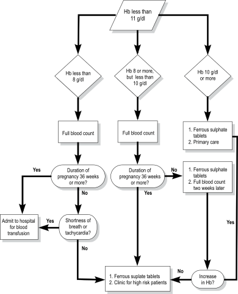
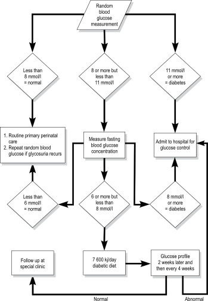

Medical problems during pregnancy and the puerperium
Before you begin this unit, please take the corresponding test to assess your knowledge of the subject matter. You should redo the test after you’ve worked through the unit, to evaluate what you have learned.
Objectives
When you have completed this unit you should be able to:
Diagnose and manage cystitis.
Reduce the incidence of acute pyelonephritis in pregnancy.
Diagnose acute pyelonephritis in pregnancy.
Diagnose and manage anaemia during pregnancy.
Identify patients who may possibly have heart valve disease.
Manage a patient who develops glycosuria during pregnancy.
Manage women needing antiretroviral treatment.
Urinary tract infection during pregnancy
7-1 Which urinary tract infections are important during pregnancy?
Cystitis.
Asymptomatic bacteriuria.
Acute pyelonephritis.
7-2 Why are urinary tract infections common during pregnancy and the puerperium?
Placental hormones cause dilatation of the ureters.
Pregnancy suppresses the function of the immune system.
Catheterisation during the first and second stage of labour is common.
A urinary tract infection is the most common infection during pregnancy.
7-3 How is cystitis diagnosed?
Severe urinary symptoms suddenly appear:
Dysuria (pain on passing urine).
Frequency (having to pass urine often).
Nocturia (having to get up at night to pass urine).
The patient appears generally well with normal observations. The only clinical sign is tenderness over the bladder.
Examination of the urine under a microscope shows many pus cells and bacteria.
A midstream urine sample for culture must be collected, if possible, to confirm the clinical diagnosis. Treatment must commence immediately without waiting for the results of the culture.
7-4 How should you manage a patient with cystitis?
Give 4 adult tablets of co-trimoxazole (e.g. Bactrim, Co-Trim, Durobac, Mezenol or Purbac) as a single dose. This is also the drug of choice for patients who are allergic to penicillin.
Amoxycillin (Amoxil) 3 g as a single dose orally could also be used but organisms causing cystitis are often resistant to this antibiotic. The treatment will be more successful if 2 amoxycillin capsules (250 mg) are replaced with 2 Augmentum tablets that contain an added 125 mg clavulanic acid each.
A midstream sample should be sent for culture and sensitivity at the next antenatal visit to determine whether the management was successful.
Co-trimoxazole can be safely used during pregnancy, including the first trimester.
7-5 What is asymptomatic bacteriuria?
It is significant colonisation of the urinary tract with bacteria, without any symptoms of a urinary tract infection.
7-6 Why is asymptomatic bacteriuria during pregnancy important?
Between 6 and 10% of pregnant women have asymptomatic bacteriuria.
One third of these patients with asymptomatic bacteriuria will develop acute pyelonephritis during pregnancy.
If patients with asymptomatic bacteriuria are diagnosed and correctly managed, their risk of developing acute pyelonephritis will be reduced by 70%.
The risk for preterm labour is significantly increased with asymptomatic bacteriuria.
The diagnosis and treatment of asymptomatic bacteriuria will greatly reduce the incidence of acute pyelonephritis and preterm labour during pregnancy.
7-7 How and when should patients be screened for asymptomatic bacteriuria?
If possible, bacterial culture of a midstream urine sample should be done at the first antenatal visit to screen patients for asymptomatic bacteriuria.
If possible, a screening test for asymptomatic bacteriuria should be done at the first antenatal visit.
7-8 Can reagent strips be reliably used to diagnose asymptomatic bacteriuria?
No. Tests for nitrites (which detect the presence of bacteria) and leukocytes, separately or together, cannot be used to accurately screen for asymptomatic bacteriuria.
7-9 What is the management of a patient with asymptomatic bacteriuria?
The same as the management of a patient with cystitis, i.e. 4 adult tablets of co-trimoxazole (e.g. Bactrim, Septran) as a single dose or amoxycillin (Amoxil) 3 g as a single dose orally. Patients who are allergic to penicillin should be given co-trimoxazole.
A midstream specimen of urine should again be sent for microscopy, culture and sensitivity at the next antenatal visit to determine whether the management was successful.
7-10 What symptoms suggest acute pyelonephritis?
Most patients have severe general symptoms:
Headache.
Pyrexia and rigors (shivering).
Lower backache, especially pain over the kidneys (renal angles).
Only 40% of patients have urinary complaints.
7-11 What physical signs are usually found in a patient with acute pyelonephritis?
The patient is acutely ill.
The patient usually has high pyrexia and a tachycardia. However, the temperature may be normal during rigors.
On abdominal examination, the patient is tender over one or both kidneys. The patient is also tender on light percussion over one or both renal angles (posteriorly over the kidneys).
7-12 What is the management of a patient with acute pyelonephritis?
The patient must be admitted to hospital.
A midstream urine sample for culture and sensitivity must be collected if possible to confirm the clinical diagnosis, identify the bacteria and determine the antibiotic of choice.
An intravenous infusion of Balsol or Ringer’s lactate should be started and 1 litre given rapidly over 2 hours. Thereafter, 1 litre of Maintelyte should be given every 8 hours.
An intravenous broad-spectrum antibiotic, e.g. cefuroxime (Zinecef) should be given prior to transfer.
Pethidine 100 mg is given intramuscularly for severe pain while paracetamol (Panado) 2 adult tablets can be used for moderate pain.
Paracetamol (Panado) 2 adult tablets, together with tepid sponges, are used to bring down a high temperature.
Patients with acute pyelonephritis during pregnancy must be admitted to hospital for treatment with a broad-spectrum antibiotic.
7-13 Why is acute pyelonephritis a serious infection in pregnancy?
Because serious complications can result:
Preterm labour.
Septic shock.
Perinephric abscess (an abscess around the kidney).
Anaemia.
7-14 What should be done at the first antenatal visit after the patient has been treated for acute pyelonephritis?
A midstream urine sample for culture and sensitivity must be collected to determine whether the treatment has been successful.
The haemoglobin concentration must be measured as there is a risk of anaemia developing.
Anaemia in pregnancy
7-15 What is the definition of anaemia in pregnancy?
A haemoglobin concentration of less than 11 g/dl.
7-16 What are the dangers of anaemia?
Heart failure which can result from severe anaemia.
Shock which may be caused by a relatively small vaginal blood loss (antepartum haemorrhage, delivery or postpartum haemorrhage) in an anaemic patient.
7-17 What are the common causes of anaemia in pregnancy?
Iron deficiency as the result of a diet poor in iron.
Blood loss during pregnancy (also during labour or the puerperium).
Acute infections (e.g. pyelonephritis), chronic infections (e.g. tuberculosis and HIV), and infestations (e.g. malaria, bilharzia or hook worm) in regions where these occur.
Folic acid deficiency is less common.
The commonest cause of anaemia in pregnancy is iron deficiency.
A full blood count, which is sent to the laboratory, will usually identify the probable cause of the anaemia.
The size and colour of the red cells indicate the probable cause of the anaemia:
Microcytic, hypochromic cells suggest iron deficiency.
Normocytic, normochromic cells suggest bleeding or infection.
7-18 What is the management of patients with iron deficiency in pregnancy or the puerperium?
The management of iron-deficiency anaemia in pregnancy will depend on the haemoglobin concentration and the duration of pregnancy:
If the haemoglobin concentration is less than 8 g/dl, the gestational age is less than 36 weeks, and the patient is asymptomatic, she can be treated with 2 tablets of ferrous sulphate 3 times a day and be followed at the antenatal clinic.
If the haemoglobin concentration is less than 8 g/dl and the gestational age is 36 weeks or more, the patient must be admitted to hospital for a blood transfusion.
All patients with a haemoglobin concentration of less than 8 g/dl who are short of breath or have a tachycardia of more than 100 beats per minute (signs of heart failure) must be admitted to hospital for a blood transfusion. In addition she must be treated with 2 tablets of ferrous sulphate 3 times a day that must be continued at least one month after the baby has been delivered.
If the haemoglobin concentration is between 8 g/dl and 10 g/dl, the patient can be treated with 2 tablets of ferrous sulphate 3 times a day. If the haemoglobin concentration does not increase after 2 weeks or the patient is 36 weeks pregnant or more, and a full blood count has not yet been done, then a full blood count must be done to decide whether the cause of the anaemia is iron deficiency.
If the haemoglobin concentration is 10 g/dl or more, but less than 11 g/dl, the patient can be treated with one tablet of ferrous sulphate 3 times a day.
The management of a patient with iron-deficiency anaemia during the puerperium will depend on whether the patient is bleeding or not:
If the patient is not bleeding, if she has no signs of heart failure, and her haemoglobin concentration is 6 g/dl or more, she can be treated with oral iron tablets. One tablet of ferrous sulphate 3 times daily for a month is sufficient.
If the patient is not bleeding and she has signs of heart failure, or if her haemoglobin concentration is less than 6 g/dl, she must be admitted to hospital for a blood transfusion to be followed by oral iron for a month.
If the patient is bleeding, she should be managed for a postpartum haemorrhage.
7-19 Should all patients receive iron supplements in pregnancy?
Well-nourished patients who have a healthy diet and a haemoglobin concentration of 11 g/dl or more, do not need iron supplements.
Patients who are poorly nourished, have a poor diet or have a haemoglobin concentration of less than 11 g/dl need iron supplements.
Patients from communities where iron deficiency is common, or where socio-economic circumstances are poor, should receive iron supplements.
Iron tablets are dangerous to small children as even one tablet can cause serious iron poisoning. Therefore, patients must always keep their iron tablets in a safe place where children cannot reach them.
7-20 How are iron supplements given in pregnancy?
As 200 mg ferrous sulphate tablets:
Patients with a haemoglobin concentration of 11 g/dl or higher must take one tablet daily.
Patients who are anaemic must be managed as described in 7-18.
7-21 What side effects can be caused by ferrous sulphate tablets?
Nausea and even vomiting due to irritation of the lining of the stomach.
7-22 How should you manage a patient who complains of side effects due to ferrous sulphate tablets?
The tablets should be taken with meals. Although less iron will be absorbed, the side effects will be less.
If the patient continues to complain of side effects, she should be given 300 mg ferrous gluconate tablets instead. They cause fewer side effects than ferrous sulphate tablets.

Figure 7-1: Flow diagram: The management of a patient with iron-deficiency anaemia in pregnancy
Heart valve disease in pregnancy and the puerperium
Heart valve disease consists of damage to, or abnormality of, one or more of the valves of the heart. Usually the mitral valve is damaged. The cause of heart valve disease in a developing country is almost always rheumatic fever during childhood.
7-23 Why is it important during pregnancy to identify patients with heart valve disease?
A correct diagnosis of the type of heart valve disease and good management of the problem reduces the risk to the patient during her pregnancy.
Undiagnosed heart valve disease and inadequate treatment may result in serious complications (e.g. heart failure causing pulmonary oedema) which may threaten the patient’s life.
A clear family planning plan must be made during the pregnancy. The patient may have a reduced lifespan and cannot risk having a large family.
Correct diagnosis and good management reduce the risk to the patient of heart valve disease in pregnancy.
7-24 Which symptoms in a patient’s history suggest that she may have heart valve disease?
Shortness of breath on exercise or even with limited effort.
Coughing up blood (haemoptysis).
Often the patient has previously been told by a doctor that she has a ‘leaking heart’.
Some patients with heart valve disease give a history of previous rheumatic fever. However, most patients are not aware that they have suffered from previous rheumatic fever.
The cause of heart valve disease in a developing country is almost always previous rheumatic fever. However, these patients usually do not know that they have had one or more attacks of rheumatic fever during childhood.
During the examination of the cardiovascular system, a cardiac murmur will be heard if the patient has heart valve disease.
7-25 How should a patient with heart valve disease in pregnancy be managed?
The patient must be referred to the high-risk antenatal clinic.
At the high-risk antenatal clinic the type of lesion and correct management will be determined.
The follow-up visits will also be at the high-risk antenatal clinic. However, the patient may be referred to the primary care antenatal clinic for some ‘inbetween’ visits. Take care to follow the instructions from the high-risk clinic carefully.
Patients who are not hospitalised should stop work earlier and rest more than usual.
The patient must be told to report immediately if she experiences any symptoms of heart failure, e.g. worsening shortness of breath or tiredness.
The patient must at least be delivered at a secondary level hospital where specialist care is available.
7-26 What form of family planning should be offered to patients with heart valve disease who have completed their families?
A postpartum sterilisation should be done. Because of the risk of heart failure, the procedure must be postponed until the third day after delivery. Patients who are willing and are prepared to return for the procedure, can have a laparoscopic sterilisation done 6 weeks after delivery. Meanwhile, an injectable contraceptive must be given.
Diabetes mellitus in pregnancy
7-27 Why is it important to diagnose diabetes if it develops in pregnancy?
Diabetes mellitus is a disorder which is caused by the secretion of inadequate amounts of insulin from the pancreas to keep the blood glucose concentration normal. As a result, the blood glucose concentration becomes abnormally high. Diabetes may often present for the first time in pregnancy, and may then recover spontaneously after delivery. The early diagnosis and good management of diabetes in pregnancy will greatly reduce the incidence of complications.
7-28 What complications may be caused by diabetes in pregnancy if it is not diagnosed early and is not well managed?
Throughout the pregnancy infections are common, especially:
Candida vaginitis.
Urinary tract infection.
During the first trimester congenital abnormalities may occur in the developing fetus due to the raised blood glucose concentration.
During the third trimester pre-eclampsia and polyhydramnios are common.
The fetus may be large, if the patient’s diabetes has been poorly controlled during the pregnancy, resulting in problems during labour and delivery mainly:
Cephalopelvic disproportion.
Impacted shoulders.
During the third stage of labour there is an increased risk of postpartum haemorrhage.
The newborn infant is at increased risk of many complications, especially hypoglycaemia and hyaline membrane disease.
7-29 How can complications which commonly occur in diabetics during pregnancy and labour be avoided?
These complications can largely be avoided by:
Early diagnosis.
Good control of the blood glucose concentration.
Early diagnosis and good control of the blood glucose concentration will prevent most of the pregnancy and labour complications caused by diabetes.
7-30 How can diabetes be diagnosed early if it should develop for the first time during pregnancy?
At every antenatal visit all patients should routinely have their urine tested for glucose.
A random blood glucose concentration must be measured if the patient has 1+ glycosuria or more at any antenatal visit.
Patients with glycosuria during pregnancy must always be investigated further for diabetes.
7-31 Is a reagent strip accurate enough to measure a random blood glucose concentration?
Yes, if an electronic instrument (Glucometer or Reflolux) is used to measure the blood glucose concentration. A reagent strip alone may not be accurate enough. If an instrument is not available, a sample of blood must be sent to the nearest laboratory for a blood glucose measurement.
7-32 Is it possible that a patient with an initially normal blood glucose concentration may develop an abnormal concentration later in pregnancy?
Yes. This may be possible due to an increase in the amount of placental hormones as pregnancy progresses. Placental hormones tend to increase the blood glucose concentration, explaining why some patients only become diabetic during their pregnancies.
7-33 How should random blood glucose measurements be interpreted and how do the results determine further management?
A random blood glucose measurement is done on a blood sample taken from the patient at the clinic without any previous preparation, i.e. the patient does not have to fast. However, patients who have had nothing to eat during the past 4 hours should be encouraged to eat something before the test.
A random blood glucose concentration of less than 8 mmol/l is normal. These patients can receive routine primary care. However, if glycosuria is again present, a random blood glucose measurement must be repeated.
A random blood glucose concentration of 8 mmol/l or more, but less than 11 mmol/l, may be abnormal and is an indication to measure the fasting blood glucose concentration. The further management of the patient will depend on the result of the fasting blood glucose concentration.
A random blood glucose concentration of 11 mmol/l or more is abnormal and indicates that the patient has diabetes. These patients must be admitted to hospital to have their blood glucose controlled. Thereafter, they must remain on treatment and be followed as high-risk patients.
7-34 How should fasting blood glucose measurements be interpreted and how do the results determine further management?
The patient must have nothing to eat or drink (except water) from midnight. At 08:00 the next day a sample of blood is taken and the fasting blood glucose concentration is measured:
A fasting blood glucose concentration of less than 6 mmol/l is normal. These patients can receive routine primary care. If their random blood glucose concentration is again abnormal, the fasting blood glucose concentration should be measured again.
Patients with fasting blood glucose concentrations of 6 mmol/l or more but less than 8 mmol/l should be placed on a 7 600 kilojoule (1 800 kilocalorie) diabetic diet. A glucose profile should be determined after 2 weeks and be repeated every 4 weeks until delivery. Usually the glucose profile becomes normal on this low kilojoule diet.
Patients with a fasting blood glucose concentration of 8 mmol/l or more have diabetes. They must be admitted to hospital so that their blood glucose concentration can be controlled.
A 7600 kj diabetic diet consists of a normal diet with reduced refined carbohydrates (e.g. sugar, cool drinks, fruit juices) and added high fibre foods (e.g. beans and wholewheat bread).
A patient with a normal blood glucose concentration early in pregnancy may develop diabetes later during that pregnancy.
7-35 How is a glucose profile obtained?
The patient must have nothing to eat or drink (except water) from midnight. At 08:00 the next day a sample of blood is taken and the fasting blood glucose concentration is measured. Immediately afterwards she has breakfast (which she can bring with her to the clinic). After 2 hours the blood glucose concentration is measured again.
7-36 How should the glucose profile be interpreted and how do the results determine further management?
A fasting blood glucose result of less than 6 mmol/l and a 2 hour result of less than 8 mmol/l are normal. These patients can be followed up as intermediate risk patients.
A fasting blood glucose result of 6 mmol/l or more and/or a 2 hour result of 8 mmol/l or more are abnormal. These patients must be admitted to hospital so that they can have their blood glucose concentration controlled.

Figure 7-2: Flow diagram: The management of a patient with glycosuria who has a random blood glucose concentration measured in pregnancy.
HIV infection and AIDS in pregnancy
7-37 What is AIDS?
AIDS is a severe clinical illness caused by the human immunodeficiency virus (HIV). Therefore, severe HIV disease is called AIDS. However, women with HIV infection can remain clinically well for many years before developing signs of the disease. Patients with AIDS have a damaged immune system. They become infected and often die of other ‘opportunistic infections’ such as tuberculosis.
7-38 Is AIDS an important cause of maternal death?
As the HIV epidemic spreads, the number of pregnant women dying of AIDS has increased dramatically. In some countries, such as South Africa, AIDS is now the commonest cause of maternal death.
The Third Report on Confidential Enquiries into Maternal Deaths in South Africa 2002–2004 showed that AIDS was the commonest cause of maternal death. Many additional AIDS deaths may have been missed, as HIV testing is often not done.
AIDS is the commonest cause of maternal death in South Africa.
7-39 Does pregnancy increase the risk of progression from asymptomatic to symptomatic HIV infection and AIDS?
Pregnancy appears to have little or no effect on the progression from asymptomatic to symptomatic HIV infection. However, in women who already have symptomatic HIV infection, pregnancy may lead to a more rapid progression to AIDS.
The progression of HIV infection during pregnancy can be monitored by:
Laboratory tests.
Clinical signs.
7-40 How is the severity of HIV infection classified?
By assessing the clinical stage of the disease:
Stage 1: Clinically well.
Stage 2 Mild clinical problems.
Stage 3: Moderate clinical problems.
Stage 4: Severe clinical problems (ie. AIDS).
By measuring the CD4 count in the blood:
A falling CD4 count is an important marker of progression in HIV. It is an indicator of the degree of damage to the immune system. A normal CD4 count is 700 to 1100 cells/µl. A CD4 count below 350 cells/µl indicates severe damage to the immune system.
The CD4 count is an important marker of HIV progression during pregnancy.
7-41 Can an HIV-positive woman be cared for in a primary care clinic?
Most women who are HIV positive are clinically well with a normal pregnancy. Others may only have minor problems (stage 1 or 2). These women can usually be cared for in a primary care clinic throughout their pregnancy, labour and puerperium provided their pregnancy is normal. Women with a pregnancy complication should be referred to hospital, as would be done with HIV-negative patients. Women with severe HIV-related problems (stage 3 or 4) will need to be referred to a special HIV clinic or hospital.
Many HIV-positive women can be managed at a primary care clinic.
7-42 How are pregnant women with HIV infection managed at a primary care clinic?
The management of pregnant women with HIV infection is very similar to that of non-pregnant adults. The most important step is to identify those pregnant women who are HIV positive.
The principles of management of pregnant women with HIV infection at a primary care clinic are:
Make the diagnosis of HIV infection by offering HIV screening to all pregnant women at the start of their antenatal care.
Take a history and do a clinical assessment to assess the clinical stage of the diease.
Assess the CD4 count in all HIV-positive women as soon as their HIV status is known.
Screen for clinical signs of HIV infection to assess whether the woman has advanced to a more severe stage of the disease at each antenatal visit.
Good diet. Nutritional support may be needed.
Emotional support and counselling.
Prevention of mother-to-child transmission (PMTCT) of HIV.
Start antiretroviral treatment when indicated.
Early referral if there are pregnancy or HIV complications.
7-43 Which clinical signs suggest stage 1 and 2 HIV infection?
Persistent generalised lymphadenopathy is the only clinical sign of stage 1 HIV infection.
Signs of stage 2 HIV infection include:
Mild weight loss (less than 10% of body weight).
Repeated or chronic mouth or genital ulcers.
Extensive skin rashes.
Repeated upper respiratory tract infections such as otitis media or sinusitis.
Herpes zoster (shingles).
Most of these women can be managed at a primary care clinic while some may have to be referred to an HIV clinic for help with treatment. These clinical problems are usually treated symptomatically with simple drugs which are not expensive.
7-44 What are the important features suggesting stage 3 or 4 HIV infection?
Features of stage 3 HIV infection include:
Unexplained weight loss (more than 10% of body weight).
Oral candidiasis (thrush).
Cough, fever and night sweats suggesting pulmonary tuberculosis.
Cough, fever and shortness of breath suggesting bacterial pneumonia.
Chronic diarrhoea or unexplained fever for more than one month.
Pulmonary tuberculosis (TB)
Features of stage 4 HIV infection include:
Severe weight loss.
Severe or repeated bacterial infections, especially pneumonia.
Severe HIV associated (opportunistic) infections such as oesophageal candidiasis (which presents with difficulty swallowing) and Pneumocyctis pneumonia (which presents with cough, fever and shortness of breath).
Malignancies such as Kaposi’s sarcoma.
Extrapulmonary TB.
7-45 What is antiretroviral treatment?
Antiretroviral treatment (i.e. ART or HAART) is the use of three or more antiretroviral drugs in combination to treat patients with severe HIV infection. The aim of antiretroviral treatment is to lower the viral load and allow the immune system to recover.
7-46 What are the indications for antiretroviral treatment in pregnancy?
The indications for antiretroviral treatment at an HIV clinic are either of the following:
Clinical signs of stage 3 or 4 HIV infection.
A CD4 count below 350 cells/µl.
7-47 What patient preparation is needed for antiretroviral treatment?
Preparing a patient to start antiretroviral treatment is very important. This requires education, counselling and social assessment before antiretroviral treatment can be started. These patients need to learn about their illness and the importance of excellent adherence (taking their antiretroviral drugs at the correct time every day) and regular clinic attendance. They also need to know the side effects of antiretroviral drugs and how to recognise them. Careful general examination and blood sent for a laboratory hemoglobin concentration and liver function test (ALT) are also needed before starting antiretroviral treatment. It usually takes 2 weeks to prepare a patient.
7-48 What drugs are used for starting antiretroviral treatment during pregnancy?
Usually antiretroviral treatment is provided to pregnant women in South Africa with three drugs:
D4T 40 mg 12 hourly (or 30 mg 12 hourly in women weighing less than 60 kg or AZT 300 mg 12 hourly.
3TC (lamivudine) 150 mg every 12 hours.
Nevirapine 200 mg daily for two weeks followed by 200 mg every 12 hours or efavirenz (EFV) 600 mg in the evening if the gestational age is more than 12 weeks.
This is the current national first line standard drug combination used during pregnancy. It may change in future.
7-49 What are the side effects of antiretroviral treatment?
Pregnant women on antiretroviral treatment may have side effects to the drugs. These are usually mild and occur during the first 6 weeks of treatment. However, side effects may occur at any time that patients are on antiretroviral treatment. It is important that the staff at primary care clinics are aware of these side effects and that they ask for symptoms and look for signs at each clinic visit. Side effects with antiretroviral treatment are more common than with antiretroviral prophylaxis during pregnancy.
Common early side effects during the first few weeks of starting antiretroviral treatment include:
Lethargy, tiredness and headaches.
Nausea, vomiting and diarrhoea.
Muscle pains and weakness.
These mild side effects usually disappear on their own. They can be treated symptomatically. It is important that antiretroviral treatment is continued even if there are mild side effects.
More severe side effects, which can be fatal, include:
AZT may suppress the bone marrow causing anaemia. There may also be a reduction in the white cell and platelet counts.
Severe skin rashes with nevirapine. All patients with severe skin rashes must urgently be referred to the HIV clinic.
Hepatitis can be caused by all antiretroviral drugs but especially nevirapine.
Lactic acidosis is a late but serious side effect, especially with d4T. It presents with weight loss, tiredness, nausea, vomiting, abdominal pain and shortness of breath in patients who have been well on antiretroviral treatment for a few months.
Staff at primary care clinics must be aware and look out for these very important side effects.
7-50 How should pregnant women on antiretroviral treatment be managed?
The national protocol should be followed. It is very important that staff at the antenatal clinic are trained to managed women with HIV infection. They should work together with the local HIV clinic or infectious diseases clinic of the local hospital.
Case study 1
A patient presents at 30 weeks gestation and complains of backache, feeling feverish, dysuria and frequency. On examination she has a tachycardia and a temperature of 38.5 °C. A diagnosis of cystitis is made and the patient is given oral ampicillin to take at home.
1. Do you agree with the diagnosis?
No. The symptoms and signs suggest that the patient has acute pyelonephritis.
2. Is the management of this patient adequate to treat acute pyelonephritis?
No. The patient should be admitted to hospital and be given a broad-spectrum antibiotic intravenously.
3. Why is it necessary to treat acute pyelonephritis in pregnancy so aggressively?
Because severe complications may occur which can be dangerous both to the patient and her fetus.
4. What should be done at the first antenatal visit after the patient is discharged from hospital?
A midstream urine sample should be collected for culture to make sure that the infection has been adequately treated. Her haemoglobin concentration must also be measured as patients often become anaemic after acute pyelonephritis.
Case study 2
A patient is seen at her first antenatal visit. She is already 36 weeks pregnant and has a haemoglobin concentration of 7.5 g/dl. As she is not short of breath and has no history of antepartum bleeding, she is treated with 2 tablets of ferrous suphate to be taken 3 times a day. She is asked to return to the clinic in one week.
1. Do you agree with the management?
No. The patient is already 36 weeks pregnant and, therefore, is at great risk of going into labour before her haemoglobin concentration has had time to respond to the oral iron treatment. Therefore, the patient must be admitted to hospital and be given a blood transfusion.
2. Are any further investigations needed?
Yes. The cause of the anaemia must always be looked for. Blood for a full blood count must be taken before she is given a blood transfusion.
3. Is a full blood count adequate to diagnose the cause of the anaemia, or should other investigations be done?
In most cases a full blood count is adequate. The majority of patients who have anaemia without a history of bleeding, are iron deficient. A full blood count will confirm the diagnosis of iron deficiency.
4. What should be done if a patient presents before 36 weeks gestation with a haemoglobin concentration below 8 g/dl?
If the patient is not short of breath and does not have a tachycardia above 100 beats per minute, she may be managed at a high-risk clinic. After blood has been sampled for a full blood count, she should be prescribed 2 ferrous sulphate tablets three times a day. With this treatment the patient should have corrected her haemoglobin concentration before she goes into labour.
5. What should be done if a patient presents before 36 weeks gestation with shortness of breath, tachycardia and a low haemoglobin concentration?
The patient must be admitted to hospital for a blood transfusion. This is necessary because the patient has shortness of breath and tachycardia which suggest heart failure. Again, a full blood count must be done before the transfusion is started.
Case study 3
A patient presents for her first antenatal visit and gives a history that she has a ‘leaking heart’ due to rheumatic fever as a child. As she has no symptoms and does not get short of breath on exercise, she is reassured and managed as a low-risk patient. As she remains well with no shortness of breath, she is told that she can be delivered by a midwife obstetric unit (primary perinatal care clinic).
1. Why is the management incorrect?
With her history of rheumatic fever and a ‘leaking heart’, the patient must be examined by a doctor to determine whether she has heart valve disease. Undiagnosed heart valve disease can result in serious complications such as pulmonary oedema.
2. What should be done if the patient has a heart murmur due to heart valve disease?
The type of heart valve disease must be diagnosed. If the patient needs medication, the correct drug must be prescribed in the correct dosage. She must be managed as a high-risk patient and should be carefully followed up for symptoms or signs of heart failure.
3. Will most patients with heart valve disease give a history of previous rheumatic fever?
No. Although most heart valve disease is caused by rheumatic fever during childhood, most of these patients are not aware that they have had rheumatic fever.
4. Is it safe to deliver a patient with heart valve disease at a primary care clinic?
No. Special management is needed in at least a secondary hospital with specialist care available.
Case study 4
An obese 35 year old multiparous patient presents with 1+ glycosuria at 20 weeks of gestation. At the previous antenatal visit she had no glycosuria. A random blood glucose concentration is 7.5 mmol/l. She is reassured and followed up as a low-risk patient. At 28 weeks she has 3+ glycosuria. As the random blood glucose concentration at 20 weeks was normal, she is again reassured and asked to come back to the clinic in 2 weeks.
1. Do you agree with the management at 20 weeks gestation?
Yes, the patient was correctly managed when a random blood glucose concentration was measured after she had 2+ glycosuria. When 1+ glycosuria or more is present again, later in pregnancy, a random blood glucose concentration must be measured again.
2. How should the patient have been managed at 28 weeks?
She should have had another random blood glucose concentration measurement. Further management would depend on the result of this test.
3. Why should a patient be investigated if she has 1+ glycosuria or more for the first time?
The patient may already be a diabetic with a high blood glucose concentration causing the glycosuria.
4. What should the management have been if her random blood glucose was 9.0 mmol/l at 28 weeks gestation?
The patient should be seen the next morning after fasting from midnight. Her fasting blood glucose concentration should then be measured.
5. If the patient has a fasting blood glucose concentration of 7.0 mmol/l, what should her further management be?
The result is abnormal but is not high enough to diagnose diabetes. She should, therefore, be placed on a 7600 kilojoule per day diabetic diet. A glucose profile must be obtained after 2 weeks and this should be repeated every 4 weeks until delivery.